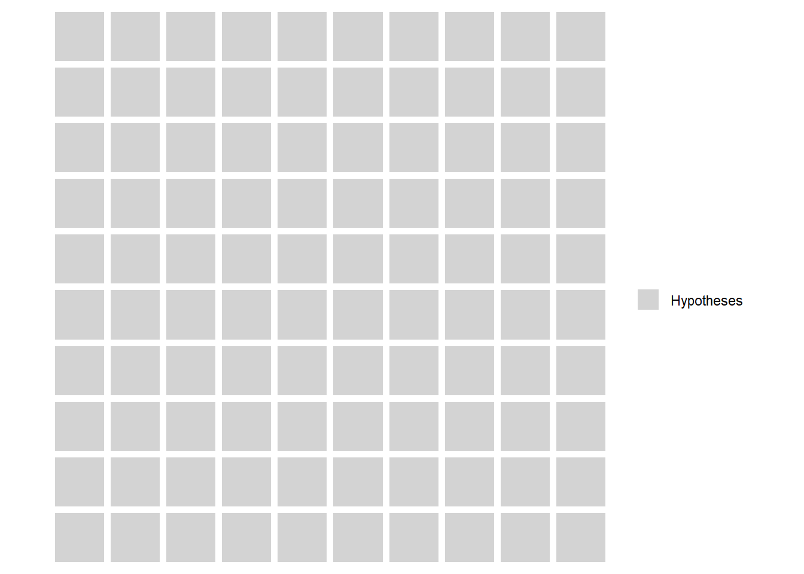

Chapter 12 Issues with Significance Testing
This chapter provides examples and analysis for the second part of Lecture 11.
In this chapter, I’ll explore examples of two common ‘issues’ or ‘debates’ regarding statistical significance testing, applied to two of our prior examples.
But first, let’s unpack more about the Ed Sheeran Study, and the multiple comparisons problem.
12.1 More on the Multiple Comparisons Problem
In this section, I’ll provide some visualizations which can help us to understand the problem with multiple comparisons.
However, it’s worth noting that the results depend on a number of assumptions about the research and what the real world actually looks like. The latter for sure we can never know. So, do bear that in mind.
First, let’s visualize the situation I just discussed in the slides. We test 100 hypotheses, and in every case, the null is true in the population (remember, we cannot know the true state of the population in reality). Below, each grey box represents a hypothesis we test.

Now, remember, even if all null hypotheses are true, our significance level, or p = 0.05, so we have to expect that on average we would expect 5 of these hypotheses tests to return p-values < 0.05, and thus we would reject the null. This is known as a false positive.
You might wonder how we could reduce the chances of false positive to zero. You could do this by setting your required p to be exactly zero. Do you see the problem here? You would certainly solve the false positive problem. But, you would also accept all null hypotheses. You would never actually find a statistically significant result in your research. Unless the null hypothesis really was true in the population in every single case, you would be inevitably missing out on making some discoveries.
Moving on, let’s visualize the situation in hand here. Below, the same 100 hypothesis tests (remember, the null is true in all cases), but this time I have marked in red the expected level of false positives.
Now, that is just the expected level for every 100 tests. If you remember from the discussion in Section 9.2, it may not be you get exactly 5 false positives in 100 tests, just that you would expect the long run average number of false positives to be 5%, in an all-null world.
So, we can look at it through a different lens. What is the probability that you would get at least one false positive in any given batch of multiple tests.
That is known as the familywise error rate, and it applies whenever you can define a cluster or ‘family’ of tests.
It’s the same principle as rolling a 6-sided die, and needing to score a ‘6’. Think of the ‘6’ as the ‘false positive’ here.
In a single die role, the probability of getting a ‘6’ is \(\frac{1}{6}\), and of course the equivalent probability of not getting a ‘6’ is \(1-\frac{1}{6}=\frac{5}{6}\).
But, what if you get to roll the die 3 times? It’s fairly easy to intuit that, even though the probability of getting a ‘6’ on any single roll stays the same, the probability of getting a single ‘6’ in 3 rolls is higher. In fact, we can calculate it.
To do so, we use the probability of not getting a 6, as follows:
P(no 6)=\((\frac{5}{6})^{3} = 0.579\)
Recalling the laws of probability then…
P(at least one 6) = 1 - P(no 6) = 1 - .579 = .421
So, now we have a 42% probability of at least one 6 in 3 rolls, even though the probability of getting a 6 in any single roll is unchanged.
We can calculate the familywise error rate for any set of multiple comparisons in exactly the same way.
One of the key advantages of ANOVA is that it is a single test, and thus does not fall prey to the multiple comparisons problem. However, in the case of post-hoc testing for the Ed Sheeran study, we are doing 3 pairwise comparisons (i.e. 3 tests) across the 3 groups, with a stated significance level of 0.05.
For 1 test, the false positive rate is \(1 - 0.95 = .05\)
But, for 3 tests, the false positive rate is \(1-0.95^{3}=0.14\)
We are ‘rolling the dice’ multiple times.
In fact, below is a nice little calculator that demonstrates how the familywise error rate changes, based on the number of tests, and the chosen significance level. It was created by Dr Daniel Roelfs, during his time at the Norwegian Centre for Mental Disorders Research (NORMENT) in Oslo, and he kindly allowed me to use it here. Check out his website: https://danielroelfs.com/about/
What you could do is adjust the sliders to check the above calculations - what is the familywise error rate for 3 comparisons and a 0.05 significance level?
When you adjust the slides, it feels kind of scary right? There are many ways to deal with the problem, but they pretty much all amount to making some correction to the required significance level, making it more stringent, in order to reduce the false positives.
For example, in the Ed Sheeran post-hoc tests above, we used Tukey’s test, which uses a correction for multiple comparisons. Another method dealt with below is the Bonferoni Correction, which is generally the most well-known of them.
12.2 The Bonferroni Correction: Rate of Change in Football Goals per Season
Here, I’m using data from https://www.footballhistory.org/league/premier-league-statistics.html
I hand-entered this into a spreadsheet, and calculated the additional numbers myself.
## # A tibble: 6 × 7
## Season Games Goals GPG SE Lower95CI Upper95CI
## <chr> <dbl> <dbl> <dbl> <dbl> <dbl> <dbl>
## 1 1995-96 380 988 2.6 31.4 926. 1050.
## 2 1996-97 380 970 2.55 31.1 909. 1031.
## 3 1997-98 380 1019 2.68 31.9 956. 1082.
## 4 1998-99 380 959 2.52 31.0 898. 1020.
## 5 1999-00 380 1060 2.79 32.6 996. 1124.
## 6 2000-01 380 992 2.61 31.5 930. 1054.You can see here I have calculated the standard errors from the yearly goal totals (which represent that year’s underlying rate of goal occurrence), then used that to calculate the 95% confidence Interval limits
We can use these to create a nifty chart with error bars, drawing from the code used by Spiegelhalter for Figure 9.4 in his book, available on his github:
From this chart, and looking at the data itself, we can see that the 95% Intervals overlap, so it is hard to conclude that the underlying rate of goals has changed significantly year on year. Yes, even in the pandemic, despite what many football ‘experts’ said.
We can look at this in some more depth though. First, it’s worth knowing that the UK Office for National Statistics uses this basic technique to estimate the probability of homicides, which also seem to be usefully approximated by the Poisson distribution.
Interestingly, the ONS suggest that it is over-stringent to rely on error bar overlap, and that we can also use z-tests to directly test the assumption that the change is zero.
So using the z-scores in the data file, I have calculated the p-value (2 tailed as we do not hypothesize a direction for the difference) for the z-scores for the difference between each season, year-on-year.
## Season Games Goals GPG
## Length:27 Min. :380 Min. : 931.0 Min. :2.450
## Class :character 1st Qu.:380 1st Qu.: 981.5 1st Qu.:2.583
## Mode :character Median :380 Median :1018.0 Median :2.679
## Mean :380 Mean :1013.9 Mean :2.668
## 3rd Qu.:380 3rd Qu.:1056.5 3rd Qu.:2.780
## Max. :380 Max. :1072.0 Max. :2.821
##
## SE Lower95CI Upper95CI Change
## Min. :30.51 Min. : 871.2 Min. : 990.8 Min. :-77.000
## 1st Qu.:31.33 1st Qu.: 920.1 1st Qu.:1042.9 1st Qu.:-35.500
## Median :31.91 Median : 955.5 Median :1080.5 Median : -2.000
## Mean :31.84 Mean : 951.5 Mean :1076.3 Mean : 3.192
## 3rd Qu.:32.50 3rd Qu.: 992.8 3rd Qu.:1120.2 3rd Qu.: 44.750
## Max. :32.74 Max. :1007.8 Max. :1136.2 Max. :111.000
## NA's :1
## Z negged p2
## Min. :-1.71027 Min. :-2.48514 Min. :0.01295
## 1st Qu.:-0.79795 1st Qu.:-1.30711 1st Qu.:0.19236
## Median :-0.04369 Median :-0.83063 Median :0.40618
## Mean : 0.07032 Mean :-0.88179 Mean :0.46986
## 3rd Qu.: 0.97794 3rd Qu.:-0.24627 3rd Qu.:0.80549
## Max. : 2.48514 Max. :-0.02236 Max. :0.98216
## NA's :1 NA's :1 NA's :1## # A tibble: 6 × 11
## Season Games Goals GPG SE Lower95CI Upper95CI Change Z negged
## <chr> <dbl> <dbl> <dbl> <dbl> <dbl> <dbl> <dbl> <dbl> <dbl>
## 1 1995-96 380 988 2.6 31.4 926. 1050. NA NA NA
## 2 1996-97 380 970 2.55 31.1 909. 1031. -18 -0.407 -0.407
## 3 1997-98 380 1019 2.68 31.9 956. 1082. 49 1.10 -1.10
## 4 1998-99 380 959 2.52 31.0 898. 1020. -60 -1.35 -1.35
## 5 1999-00 380 1060 2.79 32.6 996. 1124. 101 2.25 -2.25
## 6 2000-01 380 992 2.61 31.5 930. 1054. -68 -1.50 -1.50
## # ℹ 1 more variable: p2 <dbl>Here, we can plot the p-values (2-tailed), and again we see that two seasons seem to have significant differences. In other words, the p-values are less than 0.05 for the test as to whether the number of goals scored differs from the season before
We can see that the 1999-2000 season, and the 2009-10 seasons have p values less than 0.05
The question is are we suffering from the multiple comparisons problem? Should we correct for it?
It’s hard to say actually. Of course, we are indeed running multiple tests, 26 in fact. So, the chance of a false positive is high. The Bonferroni correction would immediately reduce the false positive chances, but at what cost?
Let’s see how this would work. In order to calculate a Bonferroni correction, you can either adjust the p-value directly that you calculate for each test, or instead simply adjust the ‘cutoff’ value for p, known as the critical p, to lower it from 0.05 and make the significance test ‘harder’ to pass. The formula to adjust the cutoff value is simply:
\(\alpha_b = (\frac{\alpha}{n})\)
Where
\(\alpha_b\) = Bonferroni-adjusted critical p value
\(\alpha\) = original critical p value (here this is 0.05)
n = number of comparisons (here this is 26)
So, the formula gives us a new Bonferroni-adjusted critical p value of 0.0019
Let’s see what happens with this new critical p value:

We can see that none of our tests now rejects the null. The Bonferroni correction is known as a highly conservative test. That is, it is based on the idea that the null hypothesis is true in each case in the population. We can thus consider it as the most stringent and conservative way to correct for the chance of false positives when doing multiple comparisons.
But, as I suggested above, that might not always be the best idea. Indeed, if you want to totally avoid any chance of a false positive, why not simply make the required alpha 0? Then, you would never get a false positive. Of course, you would never detect a true positive either.
What if it is the alternative hypothesis (that is, the H of an effect existing) that is true in all cases? In such cases, there can of course be no false positives. Therefore, in such a situation you would be increasing the chances of a false negative by reducing the chances of a false positive. So, what are the potential costs of each of these mistakes?
For example, Thomas Perneger’s 1998 paper in the BMJ is scathing about the Bonferroni adjustment. Take a look at https://www.bmj.com/content/316/7139/1236.full
Mind you, I am not saying that’s the final word, just that there are multiple perspectives on the issues!
It’s never as simple as it seems when making statistical decisions, is it?
12.3 Statistical Power: Brief Demonstration
Different types of analysis and research design require different types of power calculation, so it is hard to give a uniform example. But, for simplicity’s sake, let’s calculate the required sample size for the Ed Sheeran study we conducted earlier.
Remember, really, we should have done this before collecting data.
To calculate power, all we need the parameters of the experiment and analysis design. As such, it is easily possible to do this before collecting data, and to design your studies around it. Really, we should do this a lot more in business and management - it’s routine in fields like medicine.
So, we had 3 groups, and used ANOVA
Let’s set a significance of 0.05, a required power of 0.8, and assume the effect size is moderate (say 0.25)
##
## Balanced one-way analysis of variance power calculation
##
## k = 3
## n = 52.3966
## f = 0.25
## sig.level = 0.05
## power = 0.8
##
## NOTE: n is number in each groupSo, we really wanted to have around 50 in each group to have an 80% chance of detecting a moderate effect presuming the null was true.
You can see that my study (with only 15 in each group) was rather underpowered. However, if I had increased the effect size in the calculation to 0.5 (close to what the experiment suggested) this would have given me a result for n closer to what I actually used. However, you’d have to be VERY confident in the size of your likely effect to actually do that I think.